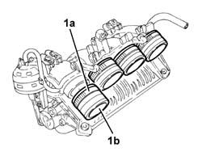

1072D14 sleeves joining long air intake ducts to manifold case - replace with modular manifold removed
- Path
- Procedures > 10 ENGINE > 1072 INLET AND EXHAUST MANIFOLDS > 1072D modular inlet manifold (v.i.s.) > 1072D14 sleeves joining long air intake ducts to manifold case - replace with modular manifold removed
- Kind
- repair procedure (removal / refitting; the operation number is the code)
- Applies to
- engines: 2.0 TS; all production periods
- Interactive page
- https://sloeber94.github.io/elrnDB-a147/en/#/3024936
Applies to: engines: 2.0 TS; all production periods
 Removing
Removing
 Refitting
Refitting1. Loosen the bands (1a) and remove the hoses joining the long air intake manifolds to the manifold casing (1b).

Applies to: engines: 2.0 TS; all production periods
Refitting
RemovingPlace the hoses joining the long air intake manifolds to the manifold casing back in their housings and secure them using the bands.